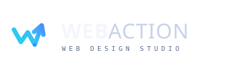
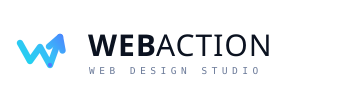

Logo variations
// drop-in assets
Primary · reversedSVG

Primary · lightSVG
Mark onlyicon
Mono · whiteknockout
Mono · ink1-color
App icon · tilesquircle
The idea
// why it worksOne mark, three reads
The zig-zag spells a W for web, then breaks its own rhythm to launch up-right into an arrowhead — the action. The two lit joints read as connected nodes, a quiet nod to the network you build on.
Built from a single constant-width stroke with round joins, so it stays crisp from a 16px favicon to a billboard, and works in one flat colour when it has to.
Clear space & minimum size
Keep padding of at least the cap-height of the mark on all sides. Don't render the mark below 20px tall.
Colour
// electric on inkTypography
// Sora + DM MonoWEB ACTION
Sora — geometric, modern, confident. Heavy 700 on “WEB”, light 300 on “ACTION” to carry the speed/contrast of the name.
WEB DESIGN STUDIO
DM Mono — for tags, captions, and code-flavoured UI. Widely tracked to feel technical and precise.
In context
// it has to live somewhereWeb Action
Design Studio
hello@webaction.studio